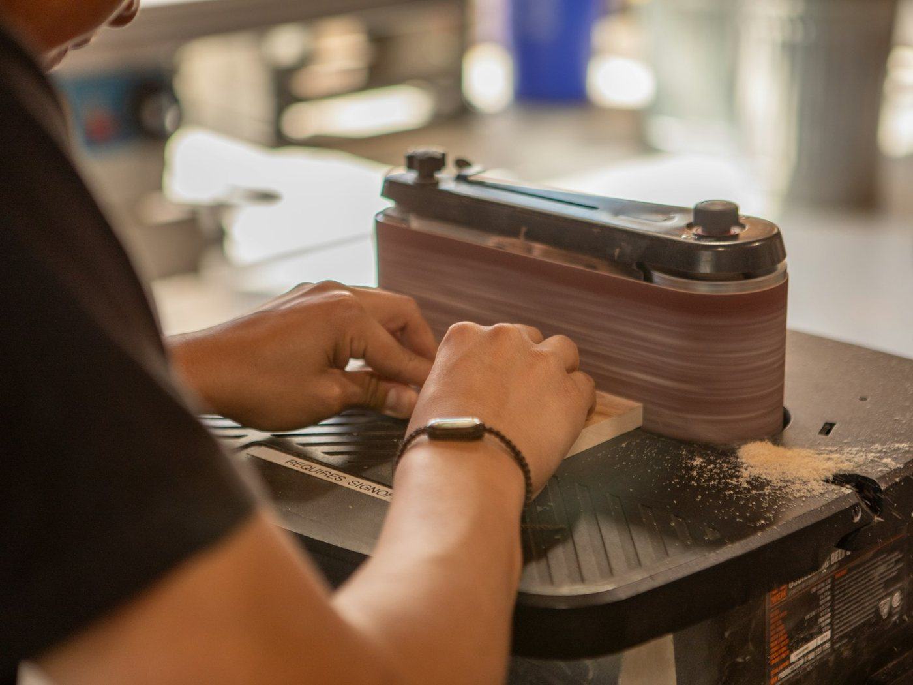
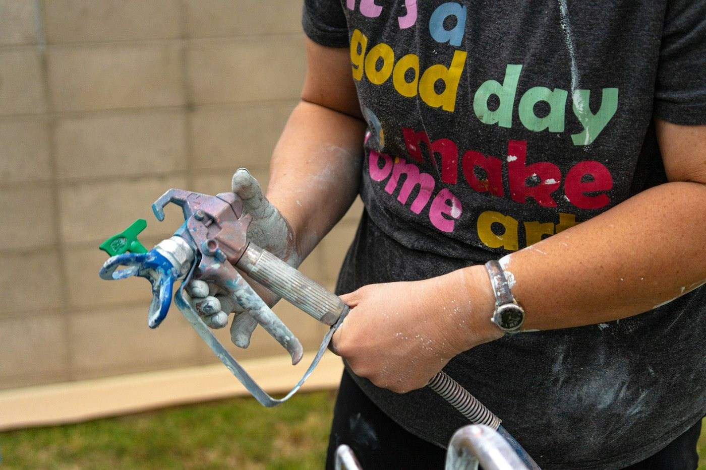
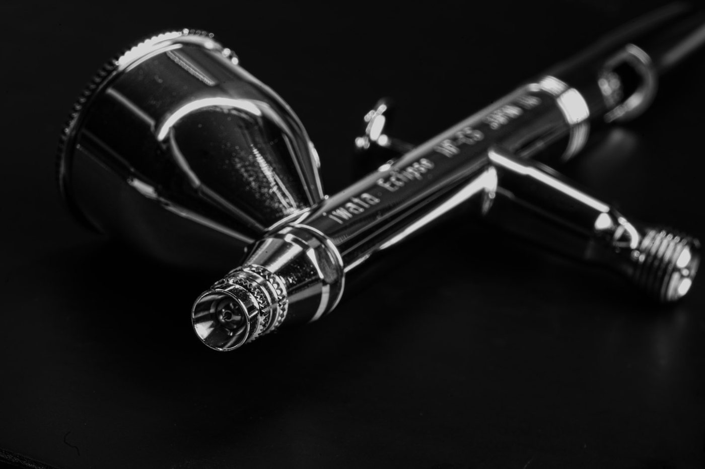

PROCESS — 塗りが仕上がるまで9 STEPS
一個が仕上がるまでの、
9つの手。
3Dプリントの造形物が、量産品と見分けがつかない外観になるまでには、決まった順序があります。派手なのは色を吹く瞬間だけ。その前後にある地味な工程こそが、仕上がりを決めます。自動車補修の手順を、一手ずつ開きます。
SEC. 01COATING STRUCTURE
塗装は、
層でできている。
仕上がった塗面は一枚に見えますが、実際は役割の違う層の積み重ねです。下から順に、造形物・プラサフ・ベースコート・クリア。積層痕は、下の層で吸収して消します。
出発点。表面には積層痕という横縞がある。
積層痕を埋めて平滑化し、塗料の密着をつくる下地。
色を決める発色層。メタリック・パールもこの層。
2液ウレタン。色を守り、磨かずとも深い艶を出す。
SEC. 02THE 9 STEPS
受け取ってから、
送り出すまで。


STEP 01
受け入れ・確認
INTAKE & INSPECTION
届いた造形物を確認します。造形方式と素材、積層痕の状態、欠けや反りの有無を見ます。初めての素材なら、いきなり本番にはせず、テストピースで塗料の相性を確かめてから進めます。
なぜ — 素材ごとに塗料の乗り方が違うから。最初の見極めが、後の失敗を防ぎます。
STEP 02
積層痕の研磨
SANDING — #800
#800 の紙やすりで、積層痕を面ごと研ぎ落とします。ここで縞の大半を物理的に消します。細いディテールや薄い壁は、力を入れすぎないよう手加減しながら。
なぜ — 積層痕は塗料では消えません。縞を消すのは、塗料ではなく研ぎです。
STEP 03
洗浄・脱脂
CLEANING & DEGREASING
研磨後、水洗いで削りカスを流し、脱脂剤（シリコンオフ）で油分を除去、タッククロスで微粉を拭き取ります。光造形品は、未硬化レジンの洗浄と二次硬化もここまでに済ませます。
なぜ — 油分が残ると塗料が弾き（ハジキ）、密着不良や膨れの原因に。脱脂を怠ると、あとで必ず出ます。
STEP 04
マスキング
MASKING
塗料を乗せない部分、塗り分ける境界を養生します。曲面や細部に沿ってテープを貼る精度が、塗り際の美しさを決めます。可動部や勘合部があれば、噛み合わせを保つよう保護します。
なぜ — マスキングの技術は、そのまま仕上がりの輪郭に出ます。地味ですが、差が出る工程です。
STEP 05
プラサフ（下塗り・中塗り）
PRIMER-SURFACER
プライマー（密着）とサーフェイサー（凹凸埋め）を兼ねたプラサフを吹きます。厚膜タイプで微細な段差を埋め、研磨で残った細かな傷を覆う。塗料が乗る土台を、ここでつくります。
なぜ — サーフェイサーを省くと密着も発色も落ちます。塗装の出来の大半は、この下地で決まる。
STEP 06
足付け・水研ぎ
WET-SANDING — #1200
プラサフが乾いたら、#1200 の耐水ペーパーで水研ぎします。摩擦熱を抑えながら表面を整え、あえて細かな傷（足）をつけて、上塗り塗料の食いつきを良くします。
なぜ — つるつるより、わずかに足がある方が塗料は密着します。平滑さと密着の、両立点です。
STEP 07
ベースコート（色）
BASE COAT
いよいよ色を吹きます。一度に厚く吹かず、薄く数回に分けて重ねる。塗る方向を層ごとに変え、乾燥間隔（フラッシュタイム）を取りながら発色を積み上げます。メタリック・パールは、この膜厚の管理が仕上がりを左右します。
なぜ — 厚塗りはタレ・ゆず肌・ディテールの潰れを招く。薄く、数回。これが均一な発色の条件です。
STEP 08
クリアコート
CLEAR COAT — 2K URETHANE
2液ウレタンクリアを吹きます。3コートパールの場合は、ベースとクリアの間にパール層を挟みます。主剤と硬化剤が反応し、硬く平滑な塗膜そのものを形成する——だから、吹きっぱなしで深い艶が出ます。
なぜ — 2液ウレタンは磨かずとも光る。だから鏡面磨きをしません。その時間を、数量対応と価格の還元に回します。
STEP 09
常温硬化・検品・発送
CURING & SHIPPING
2液ウレタンを常温で5〜7日かけて完全硬化させます。硬化を確認したら、発送前の検品へ。タレ・ゆず肌・色ムラ・異物・密着・エッジ・硬化——項目を確認し、養生・梱包して発送します。
なぜ — 硬化を待たずに送れば、輸送で傷みます。急がば、回る。完全硬化を待つのは、届いてからの品質のためです。
SEC. 03THE BOOTH
きれいな空気でしか、
きれいには塗れない。
塗装の大敵は、宙を舞うホコリです。だから塗装は、専用のブースの中で行います。フィルターを通した清浄な空気を上から下へ流し、オーバーミストとともに床下へ排気する——異物混入をふせぐ、目に見えない設備です。
5ミクロン
二次フィルターが捕集する埃の大きさDUST CAPTURED
90%超
一次フィルターの外気ダスト捕集率PRIMARY FILTER
上→下
清浄空気の流れ（ダウンフロー）DOWNDRAFT AIRFLOW
※ 一般的な自動車塗装ブースの仕組みです。それでも極小のゴミは付着し得るため、最終的な確認は検品工程（サービスページ参照）で行います。
GALLERYBEHIND THE STEPS
工程を、支えるもの。
地味な工程の積み重ねが、量産品と見分けがつかない顔をつくります。



この9工程を、
あなたの一個に。
サイズ・個数・グレードが分かれば、概算をお出しできます。まずはご相談ください。